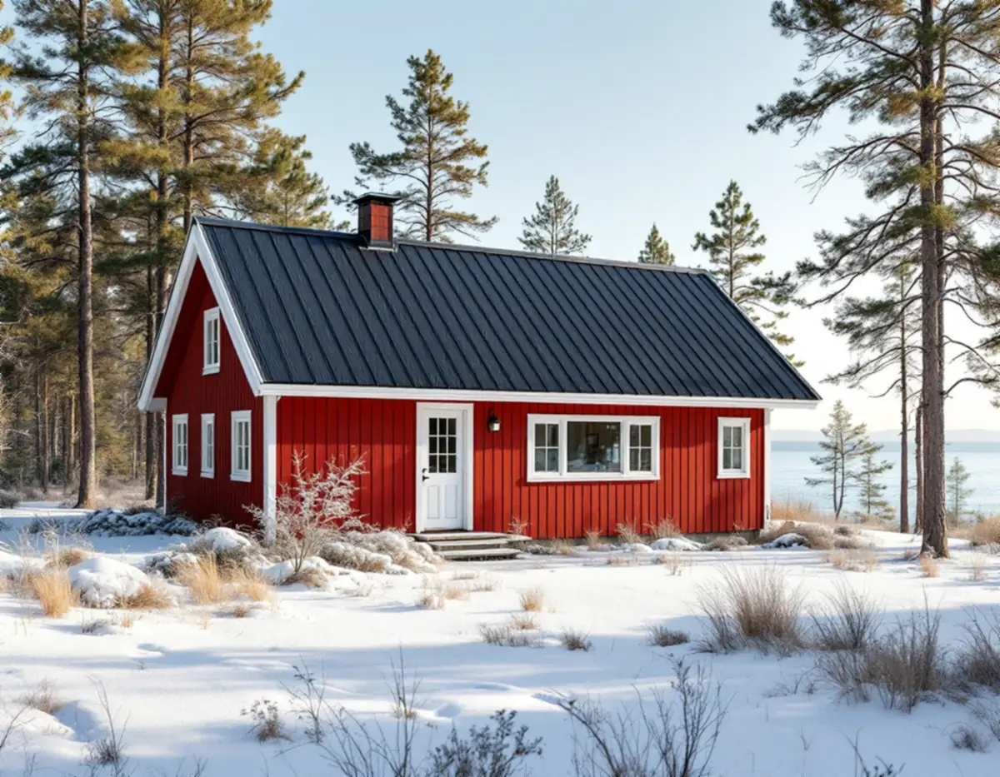
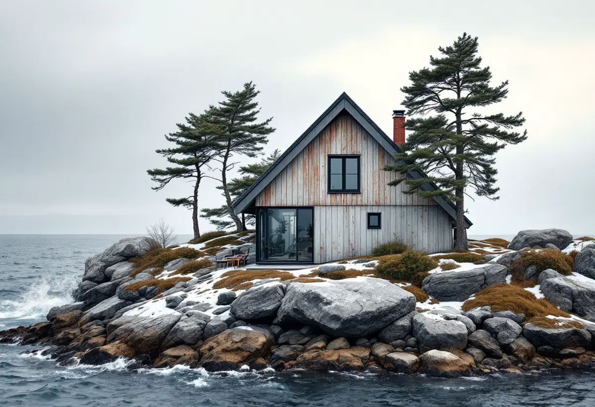

Vinden först
Vi börjar under taket och tittar på fukt, råspont och luftflöde, eftersom det avgör vilken åtgärd som behövs.
På Värmdö gäller en takrenovering ofta ett hus som byggdes för sommarbruk men nu värms året runt. Då räcker det sällan att byta taktäckningen – underlag, ventilation och plåt måste klara ett helt annat fuktklimat än när huset byggdes. I Gustavsberg kommer dessutom riksintresset för kulturmiljövården in i bilden.

Värmdö kommun har många fritidshusområden där allt fler bor permanent. Enligt kommunens broschyr Fritidshusområde i förändring handlar det om tusentals fastigheter. De områden som först ska anpassas för helårsboende kallas prioriterade förändringsområden och är utpekade i översiktsplanen Värmdö 2035. De får detaljplan och kommunalt vatten och avlopp.
Ett exempel är Återvall norra på Ingarö, prioriterat förändringsområde 15, som enligt en utredning för detaljplanen består av blandad villa- och fritidshusbebyggelse. När ett sådant område planläggs får fastigheterna ofta större byggrätter. Många ägare bygger då till eller på, och taket blir en naturlig del av ombyggnaden.
Gustavsberg har en annan historia. Bruksorten växte fram kring porslinsfabriken, och de tidigaste bruksgatorna från sent 1800-tal ligger närmast Farstaviken, med bostäder från 1900-talet längre upp på höjderna.

Ett tak som byggdes för ett hus som stod kallt på vintern har ofta en kall, väl genomluftad vind. När vindsbjälklaget isoleras och huset värms upp blir vinden kallare och fuktigare, och om takfoten är igensatt eller luftspalten saknas kan fukt kondensera mot råsponten. Det är en vanlig orsak till mögel och missfärgning på vinden i ombyggda fritidshus.
Därför börjar vi med vinden innan vi diskuterar taktäckning. Vi kontrollerar råspontens skick, om underlagspappen är hel och hur luften kommer in vid takfoten och ut vid nock. Läs mer om fuktskador och mögel på vinden och om vindsisolering.
Har huset byggts till i flera etapper finns ofta olika lutningar, material och höjder på samma tak. Övergångarna mellan gammal och ny del är svaga punkter, och där behövs nya plåtanslutningar och ibland ränndalar.
Gustavsberg är riksintresse för kulturmiljövården (AB 56). Riksantikvarieämbetet motiverar det med brukssamhället och dess industriella verksamhet från tidigt 1800-tal till 1970-talet, och med det moderna mönstersamhälle som Kooperativa Förbundet byggde, enligt en antikvarisk konsekvensanalys från kommunen.
På Grindstugatan, som analysen beskriver som ett representativt exempel, är de flesta bostadshusen från 1870-talet. Gemensamt är sadeltak, faluröda fasader med fjällpanel och vita knutar. På sådana hus är takets form och material en del av det som gör miljön enhetlig, och ett byte till ett avvikande material syns i hela gatan.
Värmdö består av fastland och öar mellan fjärdar och farleder. Vattnet i Östersjön är bräckt, med 6–9 gram salt per kilo i Egentliga Östersjön enligt SMHI, men vind, regn och fukt från sjön gör att plåt och skruv i öppna lägen behöver bättre korrosionsskydd än inne i en skogsdunge.
Hus på uddar och berg tar mest vind. Där fäster vi vindskivor, nock och fotplåt tätare och väljer fästelement som tål fukt. Hus i skogen får i stället barr i rännor och ränndalar och mossa på skuggiga takfall.
Sedan 1 december 2025 behövs i regel inget bygglov för att byta taktäckningsmaterial eller kulör på en- och tvåbostadshus. Lov kan ändå krävas om detaljplanen eller områdesbestämmelser har skyddsbestämmelser eller utökad lovplikt, eller om huset är särskilt värdefullt enligt 8 kap. 13 § PBL, enligt Boverket. Att höja taket eller ändra takformen kräver lov.
Värmdö kommun skriver på sidan om bygglov vid fasadändring att det alltid krävs bygglov för nytt tak, ommålning och nya fönster om fastigheten ligger i ett kulturhistoriskt särskilt värdefullt område eller om byggnaden är det. Enligt kommunens sida om ändringarna i PBL gäller alltid lovplikt inom riksintressen för kulturmiljövården, och kommunens kulturmiljökarta visar vilka fastigheter som berörs.
Bygger du till i samband med takrenoveringen, vilket är vanligt när ett fritidshus permanentas, prövas tillbyggnaden för sig. Vi hjälper dig att skilja på vad som är takarbete och vad som kräver ansökan.
En takrenovering på ett permanentat fritidshus innebär ofta mer än en vanlig omläggning. Vi river ner till råsponten, byter skadade brädor, lägger ny underlagspapp och ser till att luftspalten fungerar från takfot till nock. Därefter läggs plåt eller pannor, beroende på vad huset hade och vad som passar.
På plåttak som fortfarande är tätt kan det räcka med efterdragning, rostbehandling och takmålning. Har plåten börjat rosta igenom vid skarvar och fästen är ett nytt plåttak bättre. Läs mer om lokala uppdrag hos takläggare på Värmdö.
Vi börjar under taket och tittar på fukt, råspont och luftflöde, eftersom det avgör vilken åtgärd som behövs.
Ligger huset i Gustavsberg eller i ett område som håller på att planläggas tar vi reda på vilka bestämmelser som gäller.
Smala vägar och öar utan fast förbindelse kräver att material och container planeras i förväg.
Skadad råspont byts, ny underlagspapp läggs och luftspalten öppnas så att vinden torkar ut.
Vi väljer fästelement och plåt efter hur utsatt huset ligger för vind och fukt.
Vi går igenom vinden och taket när arbetet är klart och visar vad som är åtgärdat.
Rotavdraget är 30 procent av arbetskostnaden under 2026, högst 50 000 kr per person och år, och rot och rut får tillsammans vara högst 75 000 kr. Material och resor ger inget avdrag. Vi drar av beloppet på fakturan.
Skatteverket räknar även fritidshus som du äger och själv använder som en bostad där rotavdrag gäller, så avdraget gäller både före och efter att huset blivit helårsbostad. Äger två personer huset kan båda använda sitt eget utrymme.
Priset för en takrenovering på Värmdö styrs framför allt av hur mycket av underlaget som måste bytas, takets storlek och lutning, antalet anslutningar mellan gamla och nya takdelar, och hur lätt det är att få fram material till tomten. Ett hus på en ö utan bilväg kräver mer planering än ett hus vid en asfalterad gata. Läs mer i vad kostar en takrenovering och prova kalkylatorn för takbyte.
Takbyte, besiktning och plåtarbeten.
Takläggare i Värmdö →Så fungerar en omläggning.
Takrenovering och takomläggning →Det här styr priset.
Vad kostar en takrenovering? →Räkna på takytan och ROT.
Takbyte-kalkylator →Saltsjöbaden, Boo och Älta.
Takrenovering i Nacka →Solberga, Raksta och Brevik.
Takrenovering i Tyresö →Dalarö, Vendelsö och Brandbergen.
Takrenovering i Haninge →